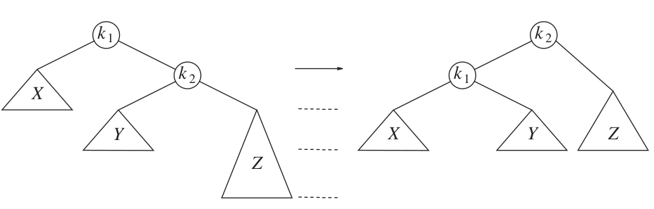
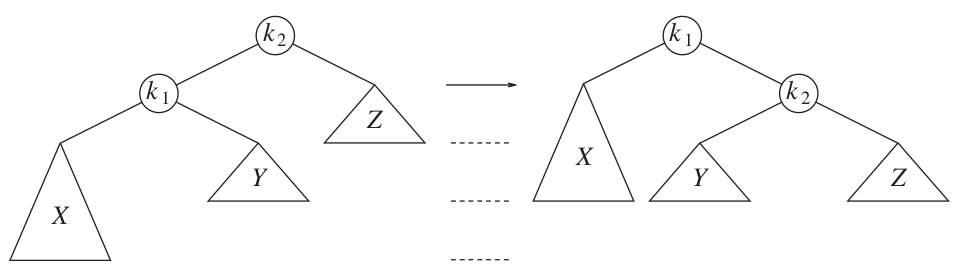
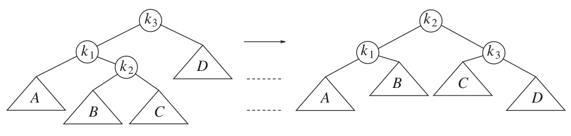
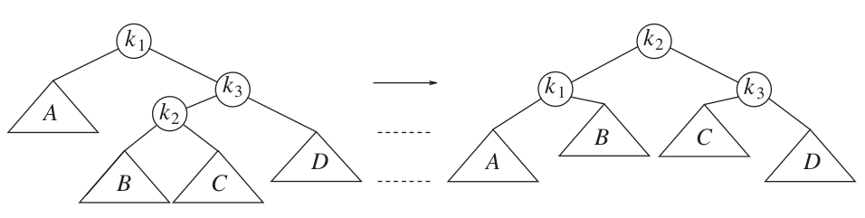

AVL Tree
Xingang (Ian) Fang
Outline
Overview
Implementation details
Overview
Definition: An AVL (Adelson-Velsky and Landis) tree is a self-balancing binary search tree data structure. It is designed to maintain a balanced tree structure at all times, ensuring that the height difference (balance factor) between the left and right subtrees of any node is limited to no more than one.
Worst case guarantee for search, insert, and delete is \(\Theta(\log n)\)
Characteristics
Balance factor = height(left subtree) - height(right subtree)
Balance factor of 0, -1, or 1 is considered balanced
Insertion and deletion operations may cause the tree to become unbalanced, in which cases the balance factor of one or more nodes will be -2 or +2.
Self-balancing: balance restored by rotations during insertion and deletion
Balancing operations are performed bottom-up, starting with the deepest unbalanced node.
Rotations to restore balance
Left rotation to restore right-right (RR) imbalance.
Right rotation to restore left-left (LL) imbalance.
Credit: Data Structures and Algorithm Analysis in C++, 4th Edition. Mark Allen Weiss.
Rotations to restore balance (cont.)
Left-right double rotation to restore left-right (LR) imbalance.
Right-left double rotation to restore right-left (RL) imbalance.
Credit: Data Structures and Algorithm Analysis in C++, 4th Edition. Mark Allen Weiss.